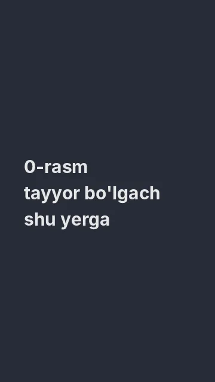
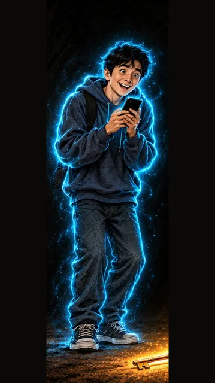

Namuna: avtobusdagi odam — 9:16 (tik)

Biriktiring:

Gap / izoh
2 va 7-sahnada shu odam chiqadi — avval shuni yasang, keyin 2 va 7 ga biriktiring
Vertical 9:16 image, web/ref_man.webp. Attach the first reference image of Diyor ONLY as a style reference (copy the painting style, do NOT draw Diyor or his neon outline). Scene: A character reference image: THE ANGRY MAN (a heavy-set Uzbek man about 45 years old, round face with a short grey-black beard and moustache, thick eyebrows, a dark brown leather jacket over a grey sweater, a black flat cap; no neon outline) standing in a neutral pose, facing the viewer, arms relaxed, a stern but ordinary face, plain light background, full body visible. Style: the same hand-painted semi-realistic cartoon illustration style as the attached reference images (painterly, visible brush texture), cinematic soft light, colourful and eye-catching. Colour rule: the whole frame uses ONLY 3 main colours: cool grey, warm amber yellow and soft warm cream; everything else is soft neutral shadow. Vertical 9:16. No text, no letters, no numbers, no logos, no brand names, no watermark, no subtitles; every phone screen is plain and blank (glowing, without any text or icons).